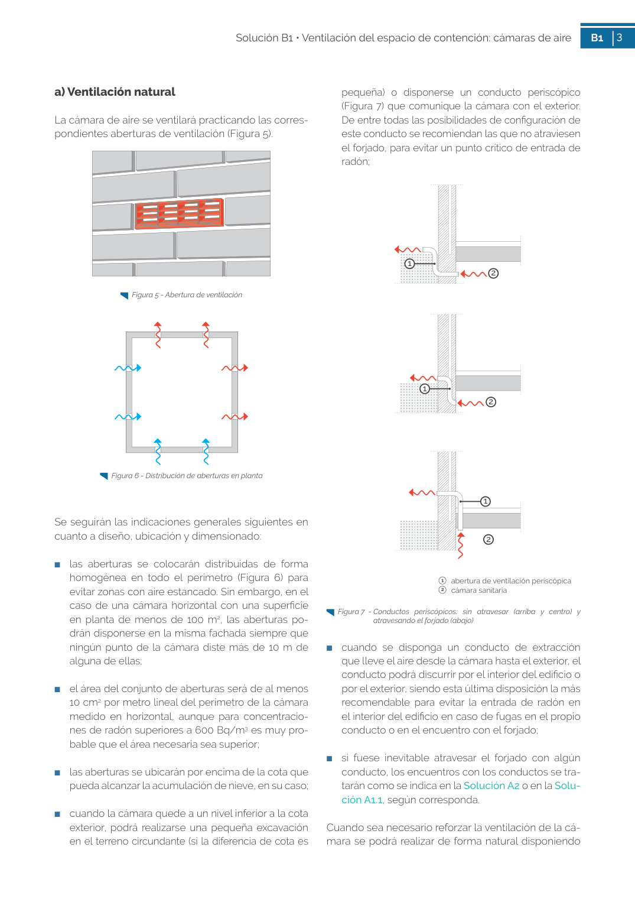

<!doctype html>
<html lang="es"><head><meta charset="utf-8">
<meta name="viewport" content="width=device-width, initial-scale=1">
<title>GUIA · Página física 3</title><link rel="stylesheet" href="../estilo.css">
</head><body>
<nav><a href="../index.html">Índice</a> › <a href="../doc/guia-pdf-064012f7a12a-sin-fecha-b78448d0a375.html">GUIA</a></nav>

<h1>GUIA · Página física 3</h1>
<header class="meta"><p><strong>Solucion B1 Ventilacion del espacio de contencion camara de aire</strong> · edición sin-fecha · capa guia</p>
<p>Documento <code>GUIA-PDF-064012f7a12a</code> · SHA-256 del PDF <code>b78448d0a375f9e7c0c436e93ac99588913afe934ff10824f8413d3918b0e9c7</code></p>
<p>Página física 3 de 6.</p>
<p><a href="../../contenido/docs/GUIA-PDF-064012f7a12a/sin-fecha__b78448d0a375/fuente.pdf#page=3">Copia fiel del PDF fuente</a> · <a href="https://www.codigotecnico.org/pdf/GuiasyOtros/GuiaRadon/Solucion_B1_Ventilacion_del_espacio_de_contencion_camara_de_aire.pdf">Fuente oficial</a></p>
<p><a href="https://www.codigotecnico.org/Guias/GuiaRadon.html">Ficha de la disposición en la fuente oficial</a></p>
<div class="cita"><p><a href="../../contenido/docs/GUIA-PDF-064012f7a12a/sin-fecha__b78448d0a375/fuente.pdf#page=6">Créditos y autoría en el PDF fuente</a>. Reproducción con cita de fuente y autores.</p>
<p>Permiso literal: Se permite la reproducción total o parcial del contenido de este do­ Edición actual: septiembre 2020 cumento siempre y cuando se cite la fuente original y a sus autores.</p>
<details><summary>Leer los créditos completos y la autoría</summary><pre class="literal">                                  Solución B1 • Ventilación del espacio de contención: cámaras de aire   B1  66


                                                                     Este documento ha sido elaborado por el Instituto de ciencias
                                                         de la construcción Eduardo Torroja (IETcc) bajo la supervisión
                                                         de la Dirección General de Agenda Urbana y Arquitectura del
                                                                             Ministerio de Transportes, Movilidad y Agenda Urbana (MITMA).

                                                             SECRETARÍA GENERAL DE
                                                  AGENDA URBANA                                                                     Y VIVIENDA                              MINISTERIO            GOBIERNO                                                                              El IETcc, perteneciente al Consejo Superior de Investigaciones                          DE                               TRANSPORTES,                                          MOVILIDAD
            DE ESPAÑA      Y                         AGENDA                                URBANA                                                        DIRECCIÓN                                                                GENERAL                                                                      DE
                                                  AGENDA URBANA Y ARQUITECTURA                   Científicas (CSIC), es el centro de investigación en edificación
                                                         de referencia en España. La Unidad de Calidad en la Construc­
                                                                       ción del IETcc asesora al MITMA en la elaboración del Código
                              MINISTERIO            GOBIERNO                         DE                               CIENCIA                                             Técnico de la Edificación que, desde el año 2019, cuenta con la            DE ESPAÑA                                E INNOVACIÓN
                                                                   sección HS6 Protección frente a la exposición al radón.

                                                                    Dirección y Coordinación:
                                                                            Ministerio de Transportes, Movilidad y Agenda Urbana
Esta ficha forma parte de una serie de documentos englobados        Isabel Marcos Anasagasti
en una misma publicación, cuyo objetivo es constituir una he­       Raquel Lara Campos
rramienta de ayuda para el diseño de soluciones de protección       Eduardo González de Prado
frente al radón:                                                                  Instituto de ciencias de la construcción Eduardo Torroja CSIC
                                                                                      Pilar Linares Alemparte
■  Guía de rehabilitación frente al radón

Fichas de soluciones:                                                 Autoras:
                                                                                      Pilar Linares Alemparte
A: De aislamiento del edificio                                                                   Sonia García Ortega
■       Solución A1. Barrera frente al radón                                  Virginia Sánchez Ramos
■       Solución A1-1. Barrera frente al radón. Encuentros
■       Solución A2. Sellado de fisuras, grietas, encuentros y juntas      Colaboradoras:
■       Solución A3. Puertas estancas                                   Karina Angélica García Pardo
■       Solución A4. Creación de sobrepresión
                                                                               Edita:
B: De reducción del radón antes de que penetre en los locales       Centro de Publicaciones Secretaría General Técnica
  a proteger                                                               Ministerio de Transportes, Movilidad y Agenda Urbana©

■       Solución B1. Ventilación del espacio de contención: cá­                                                                  Entidad colaboradora:
                 mara de aire                                                                Consejo Superior de Investigaciones Científicas · CSIC
■       Solución B2. Ventilación del espacio de contención: loca­                                                                             Ministerio de Ciencia e Innovación
                      les no habitables
■       Solución B3. Despresurización del terreno                        Catálogo de publicaciones de la Administración General
                                                                         del Estado: publicacionesoficiales.boe.es
C: De reducción del radón tras penetrar en los locales a proteger
■       Solución C1. Ventilación de los locales habitables                  Centro virtual de publicaciones del Ministerio de Transpor­
                                                                                         tes, Movilidad y Agenda Urbana: www.mitma.gob.es

Fichas de ejemplos:
                                                                     Página web del Código Técnico de la Edificación:
■      Ejemplo A1+B3. Barrera frente al radón + despresurización          www.codigotecnico.org
                    con red de tubos
■      Ejemplo A2+B1. Sellado + ventilación de la cámara sanitaria      Maquetación y diseño gráfico:
■      Ejemplo A2+B3. Sellado + despresurización con red de tubos       Lapizmente. Estrategia • Diseño Gráfico
■      Ejemplo A2+C1. Sellado + ventilación mecánica de los loca-                                                                     Los contenidos o ideas recogidas en este documento pertenecen a
                          les habitables                                   sus autores. Este documento está basado en el conocimiento dispo­
                                                                                    nible en el momento de su publicación. No se aceptará por las institu­
Publicación completa:                                                    ciones ni los autores implicados responsabilidad de ningún tipo por el
ISBN: 978-84-498-1045-9                                             uso de estas recomendaciones. Las figuras tienen carácter ilustrativo
NIPO: 796-20-136-5                                                   y no deben interpretarse como detalles constructivos.
1ª edición: septiembre 2020                                                               Se permite la reproducción total o parcial del contenido de este do­
Edición actual: septiembre 2020                                    cumento siempre y cuando se cite la fuente original y a sus autores.</pre></details></div>
<div class="aviso"><strong>Alcance y límites</strong><ul><li>Extracción automática sin revisión técnica humana completa. Contraste tablas, fórmulas, notas y excepciones con el PDF. La edición disponible no determina la vigencia ni la aplicabilidad a un proyecto.</li><li>Guia o documento divulgativo; no es texto normativo.</li><li>Extracción automática; el cotejo humano está pendiente.</li><li>Semántica y tablas no equivalen a validación exhaustiva.</li></ul></div></header>
<nav><a href="guia-pdf-064012f7a12a-sin-fecha-b78448d0a375__p0002.html">← Página 2</a> · <a href="guia-pdf-064012f7a12a-sin-fecha-b78448d0a375__p0004.html">Página 4 →</a></nav>
<p>Formato: <a href="../../contenido/docs/GUIA-PDF-064012f7a12a/sin-fecha__b78448d0a375/pagina/p0003.md">Texto de la página (Markdown)</a></p>
<p><a href="../../contenido/docs/GUIA-PDF-064012f7a12a/sin-fecha__b78448d0a375/bloque/p0003.json">JSON de bloques</a></p>
<pre class="literal">3
Solución B1 • Ventilación del espacio de contención: cámaras de aire
B1
3
a) Ventilación natural
La cámara de aire se ventilará practicando las corres­
pondientes aberturas de ventilación (Figura 5).
  Figura 5 - Abertura de ventilación
  Figura 6 - Distribución de aberturas en planta
Se seguirán las indicaciones generales siguientes en 
cuanto a diseño, ubicación y dimensionado:
	
■
las aberturas se colocarán distribuidas de forma 
homogénea en todo el perímetro (Figura 6) para 
evitar zonas con aire estancado. Sin embargo, en el 
caso de una cámara horizontal con una superficie 
en planta de menos de 100 m2, las aberturas po­
drán disponerse en la misma fachada siempre que 
ningún punto de la cámara diste más de 10 m de 
alguna de ellas;
	
■
el área del conjunto de aberturas será de al menos 
10 cm2 por metro lineal del perímetro de la cámara 
medido en horizontal, aunque para concentracio­
nes de radón superiores a 600 Bq/m3 es muy pro­
bable que el área necesaria sea superior;
	
■
las aberturas se ubicarán por encima de la cota que 
pueda alcanzar la acumulación de nieve, en su caso;
	
■
cuando la cámara quede a un nivel inferior a la cota 
exterior, podrá realizarse una pequeña excavación
en el terreno circundante (si la diferencia de cota es
pequeña) o disponerse un conducto periscópico 
(Figura 7) que comunique la cámara con el exterior. 
De entre todas las posibilidades de configuración de 
este conducto se recomiendan las que no atraviesen 
el forjado, para evitar un punto crítico de entrada de 
radón;
1   abertura de ventilación periscópica
2   cámara sanitaria
  Figura 7  - Conductos periscópicos: sin atravesar (arriba y centro) y 
atravesando el forjado (abajo)
2
1
2
1
2
1
	
■
cuando se disponga un conducto de extracción 
que lleve el aire desde la cámara hasta el exterior, el 
conducto podrá discurrir por el interior del edificio o 
por el exterior, siendo esta última disposición la más 
recomendable para evitar la entrada de radón en 
el interior del edificio en caso de fugas en el propio 
conducto o en el encuentro con el forjado;
	
■
si fuese inevitable atravesar el forjado con algún 
conducto, los encuentros con los conductos se tra­
tarán como se indica en la Solución A2 o en la Solu­
ción A1.1, según corresponda.
Cuando sea necesario reforzar la ventilación de la cá­
mara se podrá realizar de forma natural disponiendo 
</pre>
<figure><a href="../../contenido/docs/GUIA-PDF-064012f7a12a/sin-fecha__b78448d0a375/figura/p0003.png"></a><figcaption>Página visual 3, para contrastar fórmulas, tablas y figuras.</figcaption></figure><h2>Tablas extraídas</h2><p>Datos candidatos: compruebe celdas y notas en el PDF.</p><ul><li><a href="../../contenido/docs/GUIA-PDF-064012f7a12a/sin-fecha__b78448d0a375/tabla/p0003_t01.json">p0003_t01.json</a></li></ul>
<h2>Segmentos que incluyen esta página</h2><ul>
<li><a href="../apartado/guia-pdf-064012f7a12a-sin-fecha-b78448d0a375__a0010.html">a0010 · 1   cámara bufa</a></li>
<li><a href="../apartado/guia-pdf-064012f7a12a-sin-fecha-b78448d0a375__a0011.html">a0011 · 1   cámara bufa / a) Ventilación natural</a></li>
<li><a href="../apartado/guia-pdf-064012f7a12a-sin-fecha-b78448d0a375__a0012.html">a0012 · 1   abertura de ventilación periscópica 2   cámara sanitaria</a></li>
</ul>
<footer>Generado estáticamente desde el corpus normalizado; sin JavaScript ni servicios externos. El HTML es una vista reproducible; conserve la fuente y la edición al citar.</footer>
</body></html>
